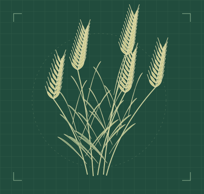
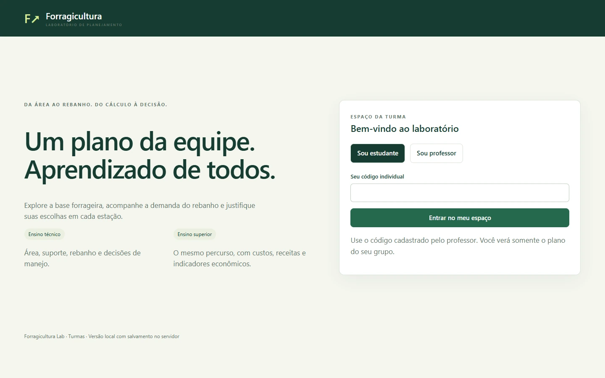
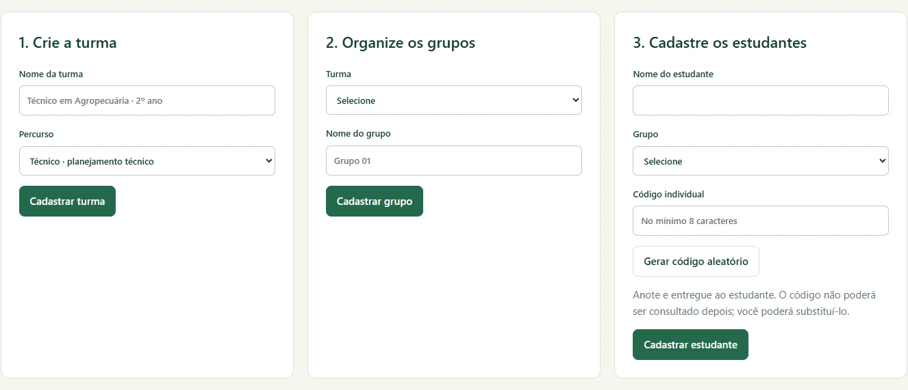
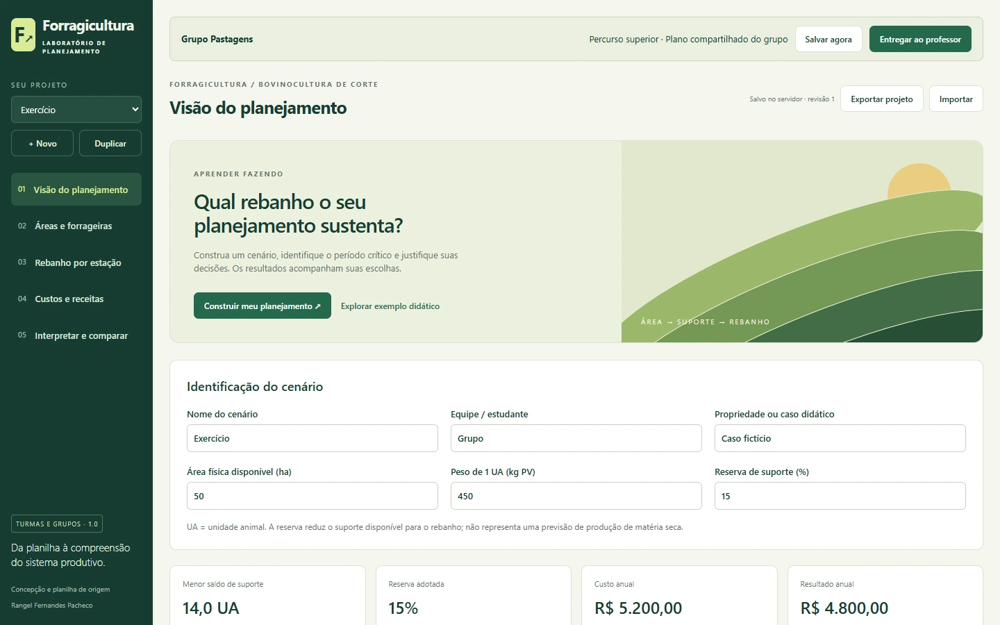
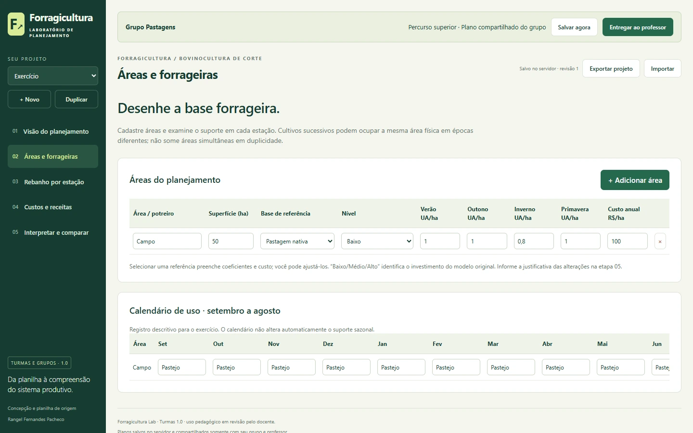
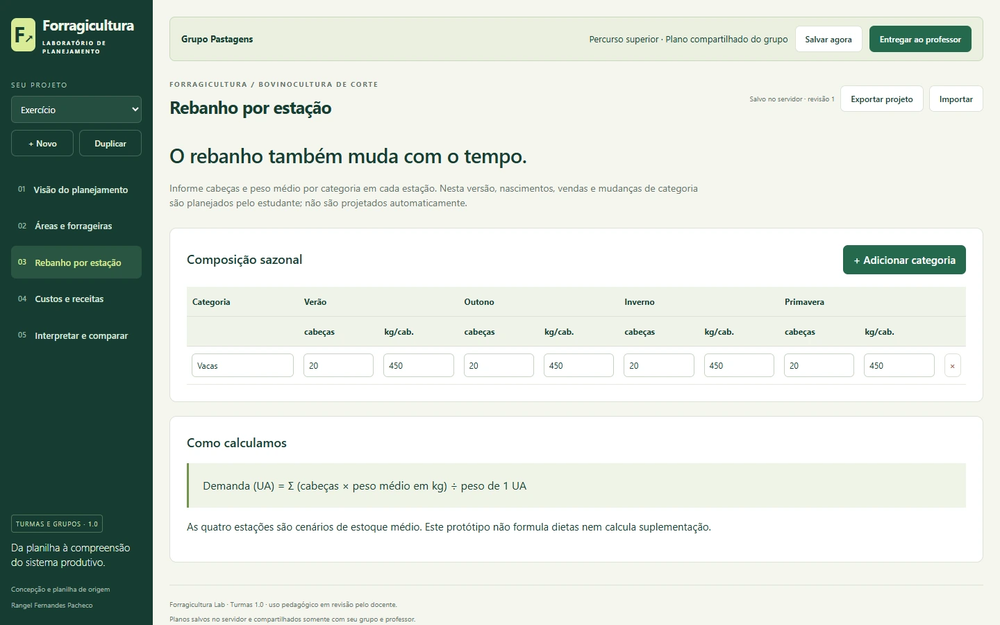
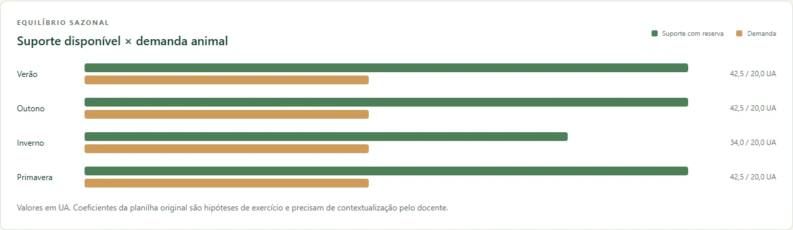
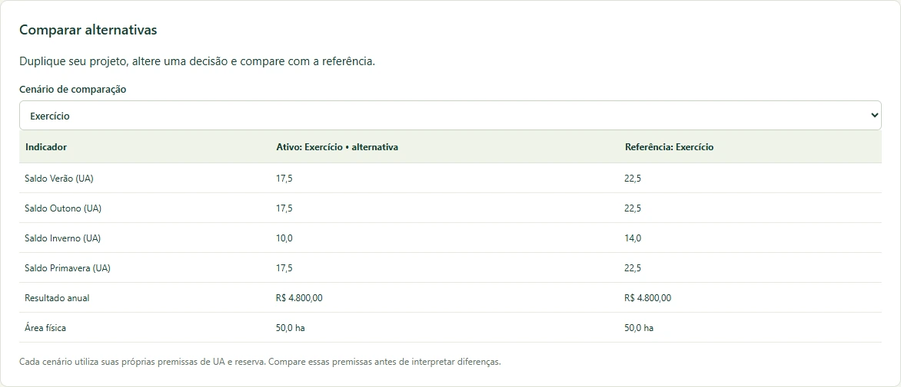
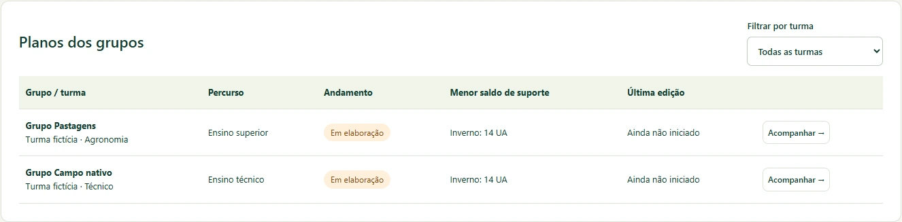

Turmas e grupos
O professor organiza as turmas por percurso e distribui os estudantes em grupos. Cada grupo trabalha em um plano compartilhado.
Portfólio técnico-científico
Planejamento forrageiro, simulação de cenários e aprendizagem aplicada à pecuária sustentável.
Aplicativo educacional para construir e comparar planos de bovinocultura de corte na formação técnica e superior.
Consultar evidências técnicas →
O produto
Uma área que sustenta o rebanho no verão pode apresentar déficit no inverno. Para compreender essa diferença, o estudante precisa relacionar a disponibilidade sazonal das pastagens com o número e o peso dos animais.
Quando área, oferta de forragem e composição do rebanho são estudadas separadamente, fica difícil interpretar como uma decisão de manejo afeta o conjunto. O aplicativo reúne essas variáveis em um mesmo exercício.
Permitir que estudantes construam, analisem e comparem cenários de produção animal com base em indicadores técnicos e econômicos, articulando manejo de pastagens, produção animal e gestão.
Percurso de uso
O professor cria a turma, define o percurso e vincula cada estudante a um grupo.
O grupo informa áreas, recursos forrageiros, categorias animais e pesos por estação.
A equipe monta alternativas de uso das pastagens e escolhe a reserva de suporte.
O motor calcula suporte e demanda para as quatro estações, conforme as premissas do cenário.
A equipe compara alternativas, identifica o período crítico e registra a justificativa das decisões.
O professor consulta entregas, registra uma devolutiva textual e pode reabrir o plano para revisão.
Recursos implementados
O professor organiza as turmas por percurso e distribui os estudantes em grupos. Cada grupo trabalha em um plano compartilhado.
A equipe cadastra áreas e rebanhos, duplica o cenário de referência e altera uma decisão para comparar alternativas.
Tabelas e gráficos apresentam suporte disponível e demanda animal em unidades animais (UA). O saldo ajuda a localizar períodos de déficit.
Custos e receitas informados alimentam indicadores como resultado anual, resultado por hectare e margem.
O docente disponibiliza modelos para o mesmo percurso. Cenários podem ser exportados e importados em formato JSON.
A entrega encerra a edição pelo grupo. O professor acompanha a situação, consulta o plano e pode solicitar correções mediante reabertura.
Metodologia
O modelo didático relaciona área, capacidade de suporte, reserva e composição do rebanho. A comparação entre oferta e demanda permite discutir alternativas sob premissas explícitas.
Os coeficientes representam hipóteses de um exercício. Sua aplicação a uma propriedade exige referências agronômicas e análise das condições locais.
Área 49 · Ciências Ambientais
O vínculo com Frederico Westphalen oferece um ponto de partida para formular problemas sobre a sazonalidade das pastagens e as decisões de manejo no território. Uma proposta de mestrado profissional pode relacionar esses exercícios às suas linhas de atuação e documentar onde e como o produto foi aplicado.
Relacionar a lotação ao suporte das pastagens permite discutir pressão de uso, períodos críticos e conservação dos recursos forrageiros.
No percurso superior, o grupo pode examinar quanto custa uma alternativa de manejo e como ela afeta o resultado por hectare.
A construção coletiva do plano cria oportunidades para justificar decisões e compartilhar conhecimento técnico na formação profissional.
A interface traduz conceitos de produção vegetal e animal em cenários editáveis, cálculos sazonais e indicadores interpretáveis.
O vínculo com os ODS expressa potencial de contribuição. Por exemplo, a comparação entre estações permite discutir variabilidade climática, enquanto a análise da lotação abre espaço para debater uso responsável da terra. A mensuração de efeitos ambientais exige estudos de aplicação.
Documento Orientador de APCN da Área 49 (2026) · Agenda 2030 nas Nações Unidas Brasil
Registro de 03/11/2026
O conjunto documentado inclui interfaces de planejamento e de gestão acadêmica, motor de cálculos técnicos e econômicos e armazenamento local dos planos. Registros de versões, documentação de arquitetura e análise de rastreabilidade permitem acompanhar o desenvolvimento.
A suíte original do motor também foi aprovada. As verificações cobrem comportamentos e exemplos programados. A validação científica dos parâmetros e a avaliação pedagógica constituem etapas próprias.
Galeria de demonstração
Capturas da versão funcional em um ambiente isolado. Turmas, estudantes e propriedades são fictícios. Selecione uma imagem para consultar os detalhes em tamanho original.








Ensino e aplicação
Histórico e perspectivas
Acervo de comprovação
Sínteses preparadas para leitura, impressão ou salvamento em PDF pelo navegador.
Equipe e vinculação
Responsável docente e idealizador do Forragicultura Lab.
Instituto Federal de Educação, Ciência e Tecnologia Farroupilha — Campus Frederico Westphalen.
Produto Técnico e Tecnológico · Tipologia proposta: Software/Aplicativo. A identificação acadêmica registra a função docente. A titularidade do software requer documentação própria.